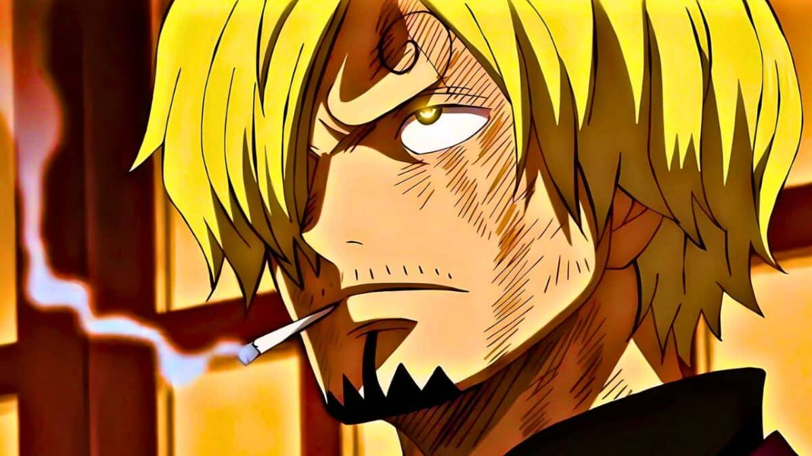
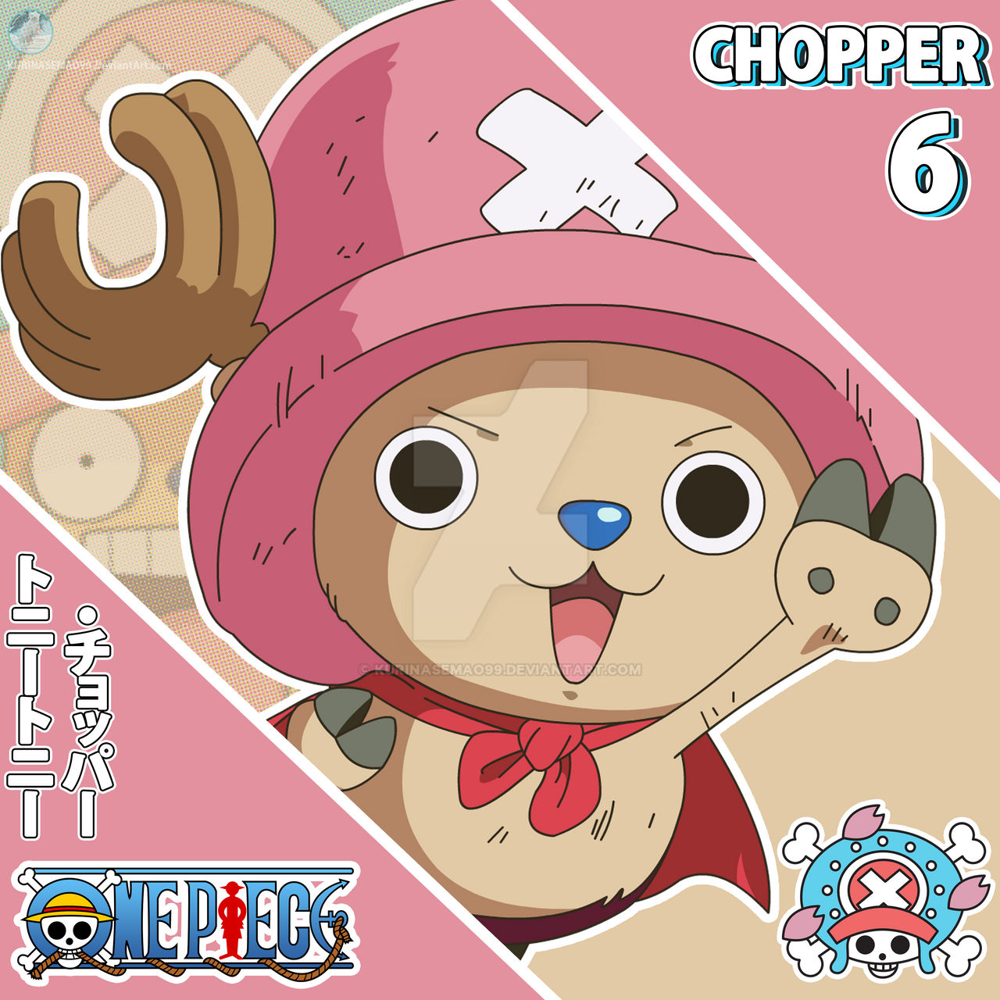
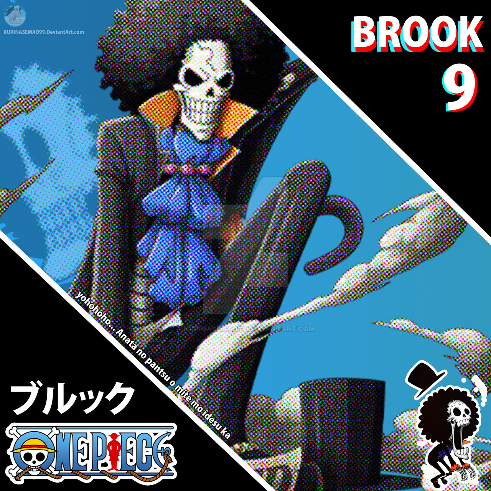
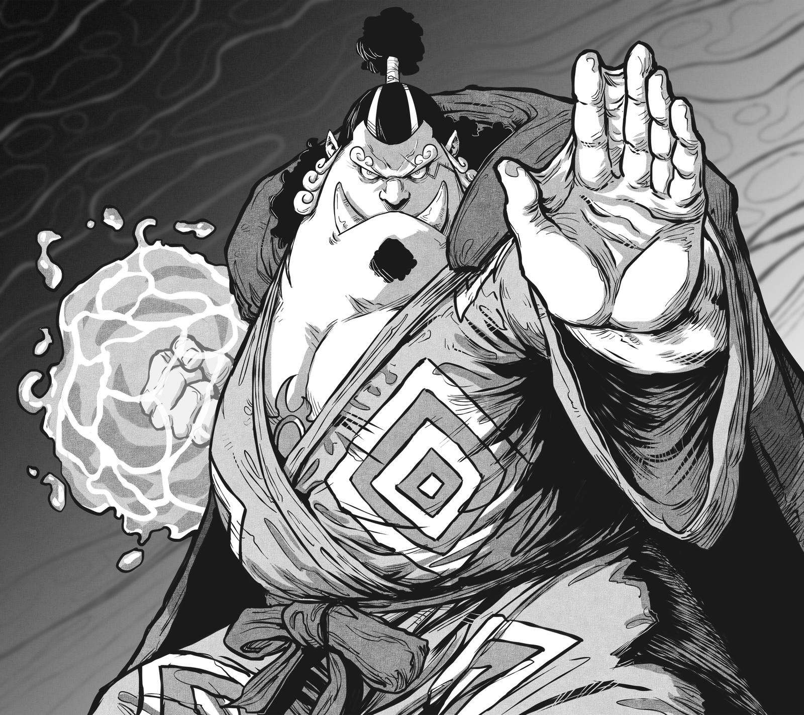

One Piece surgiu como um mangácriado pelo autor japonês Eiichiro Oda. Ele começou a publicar a história em 1997, na revista Weekly Shonen Jump, da editora Shueisha. Oda queria criar uma aventura gigantesca inspirada nos filmes de piratas que ele assistia quando era criança. Assim nasceu a ideia de um mundo cheio de ilhas, mares perigosos, poderes especiais e personagens com sonhos enormes.
A história acompanha Monkey D. Luffy, um jovem que ganha poderes de borracha após comer uma fruta especial. Ele decide montar sua tripulação e partir para o mar em busca do maior tesouro de todos, o One Piece, para se tornar o Rei dos Piratas. O sucesso foi tão grande que o mangá virou anime em 1999, filmes, jogos e se tornou uma das obras mais populares do mundo.
O que o Oda queria transmitir com a obra?
Eiichiro Oda queria criar uma história que transmitisse liberdade, aventura e sonhos. Para ele, One Piece deveria ser um mundo onde tudo fosse possível: ilhas únicas, personagens marcantes e jornadas que inspirassem as pessoas a seguirem seus próprios objetivos. Oda queria que a obra mostrasse que, mesmo com dificuldades, vale a pena lutar pelo que você acredita — exatamente como Luffy e sua tripulação fazem. One Piece nasceu para ser uma aventura grandiosa e emocionante, capaz de marcar gerações.
Obras que Eiichiro Oda se baseou
Ele se inspirou em várias obras para criar o universo de One Piece. Suas principais referências foram histórias clássicas de piratas, filmes antigos de aventura e mangás que ele lia quando jovem. Entre as inspirações mais conhecidas estão:
Vicky the Viking - inspiração forte para o clima de aventura.
Dragon Ball - influenciou o humor, o ritmo e o estilo de evolução dos personagens.
Histórias de Piratas Reais - especialmente lendas como o tesouro de Edward Teach (Barba Negra).
Filmes antigos de aventura - ajudaram a formar o tom divertido e explorador da série.
Oda juntou tudo isso e criou um mundo único, cheio de humor, emoção e liberdade — marcando One Piece como algo completamente original.
Conhecendo os Mugiwaras
Luffy
Monkey D. Luffy
Luffy é o fundador e capitão dos Chapéus de Palha. Desde pequeno, ele sonha em se tornar o Rei dos Piratas, inspirado pelo pirata Shanks, que salvou sua vida. Após comer a Gomu Gomu no Mi, Luffy ganhou um corpo de borracha, permitindo ataques poderosos e únicos. Com sua determinação inabalável e vontade de proteger seus amigos, ele lidera os Mugiwaras rumo ao maior tesouro de todos: o One Piece.
Zoro
Zoro
O Zoro foi o primeiro a entrar para os Chapéus de Palha. Antes de conhecer Luffy, ele era um caçador de piratas que seguia um único objetivo: se tornar o maior espadachim do mundo. Ele luta usando o famoso estilo de três espadas (Santoryu) e possui uma força e resistência absurdas. Mesmo sério e focado, Zoro é completamente leal ao Luffy e está disposto a tudo para ajudá-lo a realizar seu sonho — enquanto persegue o seu próprio.
Nami
Nami
Nami é a navegadora dos Chapéus de Palha e uma das mentes mais brilhantes do bando. Desde pequena, ela sonha em desenhar o mapa completo do mundo. Antes de entrar oficialmente para a tripulação, Nami vivia sob o domínio do pirata Arlong, o que marcou profundamente sua vida. Com sua inteligência, habilidade em navegação e preciso uso do Clima-Tact, Nami guia os Mugiwaras pelos mares mais perigosos, garantindo que a aventura continue.
Usopp
Usopp
Usopp é o atirador dos Chapéus de Palha e um grande inventor. Seu maior sonho é se tornar Um guerreiro valente dos mares, inspirado em seu pai, Yasopp, que é pirata. Mesmo sendo medroso e cheio de histórias exageradas, Usopp demonstra enorme coragem quando seus amigos precisam dele. Com sua mira precisa, estratégias criativas e suas invenções, ele se tornou um membro essencial da tripulação — sempre pronto para surpreender.
Sanji

Sanji
Sanji é o cozinheiro dos Chapéus de Palha e sonha em encontrar o All Blue, um mar lendário onde todos os peixes do mundo se encontram. Ele foi criado no Baratie, um restaurante no mar, onde aprendeu a cozinhar e lutar usando apenas as pernas, desenvolvendo seu poderoso estilo de combate. Sanji valoriza profundamente seus companheiros e nunca deixa ninguém passar fome. Suas habilidades culinárias e sua força fazem dele um membro indispensável da tripulação.
Chopper

Chopper
Chopper é o médico dos Chapéus de Palha. Ele era uma rena comum até comer a Hito Hito no Mi, que lhe deu forma humana e a capacidade de falar. Rejeitado por humanos e renas, Chopper encontrou apoio com o doutor Hiriluk, que o inspirou a perseguir seu sonho: curar qualquer doença. Com seu conhecimento médico, suas transformações e seu coração puro, Chopper se tornou um membro essencial do bando — sempre pronto para ajudar quem estiver sofrendo.
Robin
Robin
Robin é a arqueóloga dos Chapéus de Palha e a única pessoa viva capaz de ler os Poneglyphs, blocos de pedra que contam a história perdida do mundo. Desde criança ela foi perseguida por causa desse talento e cresceu sozinha, carregando o sonho de descobrir a verdadeira história, o Século Perdido. Com seus conhecimentos profundos e o poder da Hana Hana no Mi, que permite criar partes do corpo em qualquer superfície, Robin é uma peça chave na jornada dos Mugiwaras.
Franky
Franky
Franky é o carpinteiro dos Chapéus de Palha e o responsável por construir o navio atual da tripulação, o Thousand Sunny. Antes disso, ele era um ciborgue fazedor de navios em Water 7, com o sonho de criar e navegar em uma embarcação capaz de dar a volta ao mundo. Com sua força absurda, armas embutidas no corpo e criatividade sem limites, Franky garante que o navio e o bando estejam sempre prontos para qualquer aventura.
Brook

Brook
Brook é o músico dos Chapéus de Palha e um esqueleto vivo graças ao poder da Yomi Yomi no Mi, que lhe permitiu retornar à vida após sua morte. Ele fazia parte de uma antiga tripulação e prometeu reencontrar seu amigo baleia, Laboon, promessa que marcou sua jornada. Com sua personalidade divertida, habilidades de esgrima e música, Brook traz leveza ao bando e ajuda a manter o espírito da tripulação sempre alto.
Jinbe

Jinbe
Jinbe é o timoneiro dos Chapéus de Palha e um respeitado guerreiro do povo dos homens-peixe. Antes de entrar no bando, ele fez parte dos Piratas do Sol e sonha com um mundo onde humanos e homens-peixe vivam em paz. Com sua força absurda e domínio do Karatê Homem-Peixe, Jinbe conduz o navio com segurança e se tornou um dos pilares de confiança da tripulação.
Breve Resumo
Os Chapéus de Palha formam uma tripulação unida por um único propósito: seguir seus sonhos ao lado de pessoas em quem confiam. Cada integrante traz sua própria habilidade — seja força, inteligência, estratégia, navegação, medicina, história, música ou construção — e isso faz do grupo um time completo e imparável. Mesmo com origens diferentes e vidas difíceis, todos escolheram navegar com Luffy porque acreditam na mesma coisa: liberdade, amizade e a coragem de avançar sem olhar para trás.
Curiosidades do Anime
Luffy não sabe desenhar nada
Em várias cenas, o Luffy tenta fazer retratos de inimigos ou de pessoas desaparecidas… e os desenhos são tão horríveis que ninguém reconhece nada. Ele faz isso com toda a seriedade do mundo, e é sempre hilário.
One Piece quase teve outro nome
No início, Oda pensou em chamar a série de Romance Dawn, que virou apenas o nome do capítulo piloto.
Oda criou o final desde o começo
Mesmo com mais de 1000 capítulos, ele já sabia como a história iria terminar desde o início.
Luffy seria do tipo fogo
Antes de decidir pela borracha, Oda cogitou dar poderes de chamas para o protagonista.
O mundo de One Piece é inspirado em lugares reais
Muitas ilhas têm referências diretas a países e culturas do mundo.
Sanji quase se chamava Naruto
Oda mudou o nome para evitar conflitos com o mangá que estava para lançar.
Brook é o membro mais velho do bando
Ele tem mais de 90 anos contando a vida antes de morrer.
Oda dorme pouquíssimo
Ele trabalha tanto que dorme apenas 3 horas por dia durante a produção do mangá.
One Piece já quebrou vários recordes mundiais
Entre eles, o de mangá mais vendido da história.
Ambas curiosidades são interessantes né? de fato o Oda é um Gênio, ele cria suas histórias com coração e se dedica bastante em sua obra só para nos dar uma história incrivel e divertida!